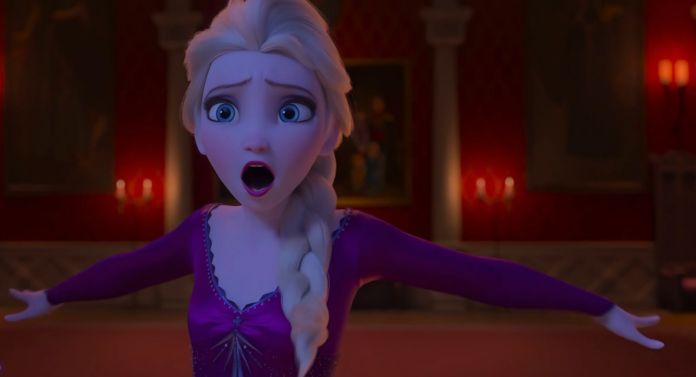
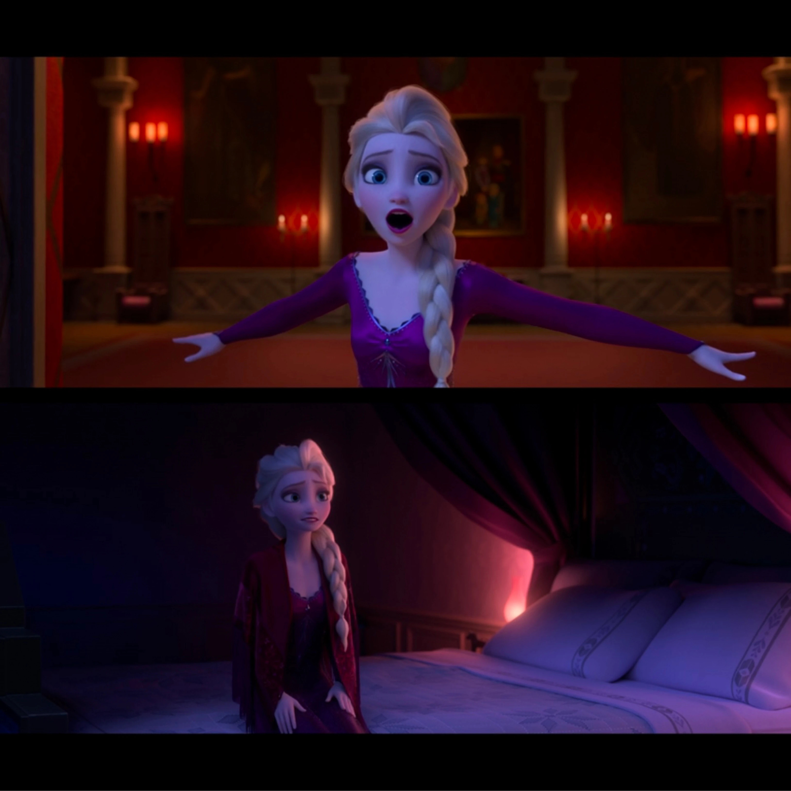
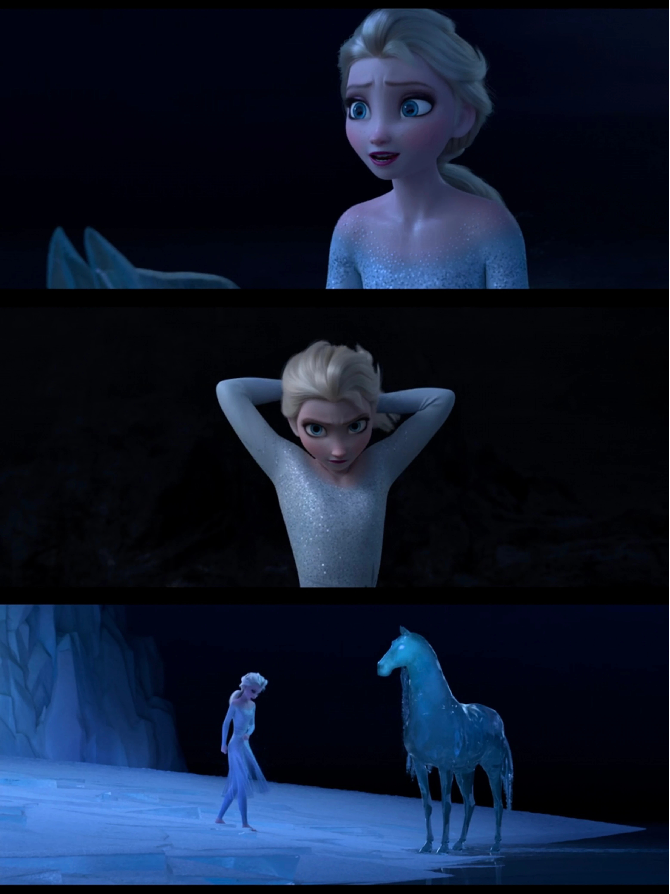
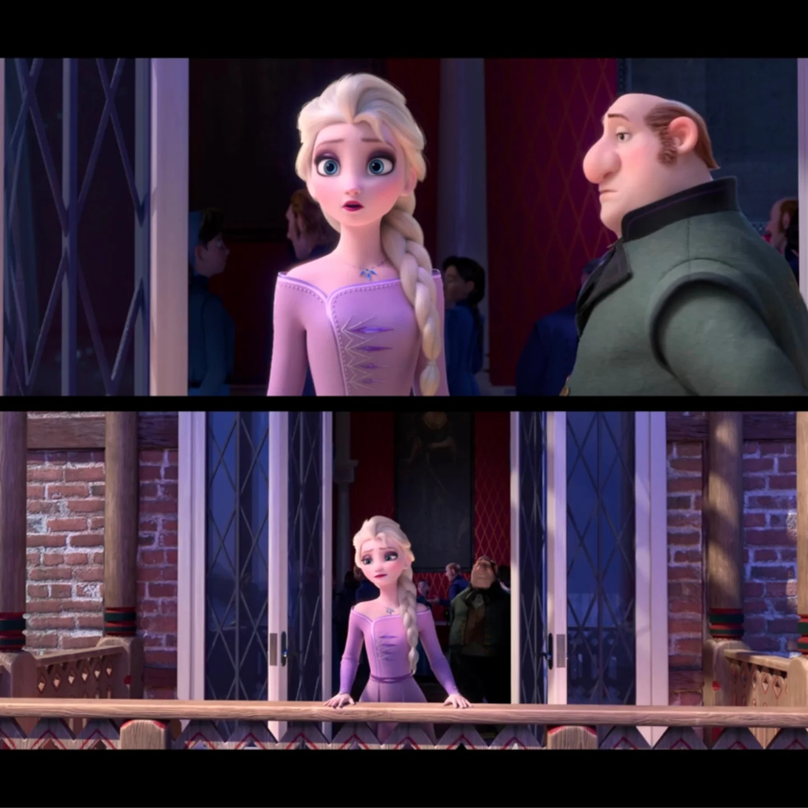

🎵 歌曲 · F2 歌曲
Into the Unknown
F2 歌曲
艾莎独唱 + AURORA · 时长 3:14
📖 Into the Unknown
艾莎独唱 + AURORA · 时长 3:14
一、歌曲基本信息

深夜呼唤·Into the Unknown 电影 2 · 深夜独唱 · 艾莎回应不可名状的召唤 | 来源：电影剧照
演唱者
Idina Menzel & Aurora（艾莎）
出自
冰雪奇缘 2 (Frozen II, 2019)
词曲作者
Kristen Anderson-Lopez & Robert Lopez
《Into the Unknown》是《冰雪奇缘 2 (Frozen II, 2019)》中的经典歌曲，由Kristen Anderson-Lopez 与 Robert Lopez 创作。这首歌在电影中承担着重要的叙事功能，是角色情感表达和剧情推进的关键节点。（来源：迪士尼官方 / Frozen原声带）
二、完整歌词（中英对照 · 逐句交互 · 播放高亮）
🎵
Into the Unknown
Idina Menzel & Aurora（艾莎）
▶
INTRO · 序奏 · 海妖（第五精灵之声）
💡 点击查看逐句考据
（吟唱 1）第五精灵之声带着低沉的呼唤钻入艾莎的心。这一次她仍想抵抗，却在四下张望里第一次真正“听清”了它——声音不再是杂音，而是带着方向的召唤，她的动摇悄悄开始。
💡 点击查看逐句考据
（吟唱 2）呼唤再次靠近，艾莎随即厉声辩驳“我已把过去藏好”，配乐里那声吟唱却像影子甩不掉。她在抗拒与动摇之间被撕扯，这一段吟唱正是那股拉扯她的外部力量。
Ah-ah-ah-ahh-ah-ah
啊——啊——啊——啊——啊
💡 点击查看逐句考据
（吟唱长 1）音节被拉长上扬，呼唤似乎加了几分恳切，像旧友在她耳畔唤第二声。艾莎在城堡里下意识又望向窗外——这份“放不下”比任何歌词都更诚实。
VERSE 1 · 主歌一 · 艾莎
I can hear you — but I won't.
我能听见你——但我不愿回应。
💡 点击查看逐句考据
艾莎听见了来自林间/地心的召唤，却决定充耳不闻。她已从逃避魔法走到懂得驾驭，却仍害怕那声音会把她拖回不安——这句“听得见，却不肯应”，是她与崭新自我之间的第一次正面角力。
Some look for trouble while others don't.
有人自寻烦恼，有人不会。
💡 点击查看逐句考据
“有人自寻麻烦，有人避之唯恐不及”——艾莎在为“不回音”寻找合理性。她曾因本能而迈向魔法，此刻却想守住安逸；这句自我劝慰，暴露了她在冒险与安稳之间的拉锯。
There's a thousand reasons I should go about my day
我有一千个理由继续过我的一天
💡 点击查看逐句考据
我有一千个理由继续过我的日子，艾莎列举自己不应该回应呼唤的理由。作为阿伦黛尔的女王，她有责任和义务，不能轻易冒险——她用这些理由来说服自己忽视这个声音。
And ignore your whispers which I wish would go away, oh-oh
无视你的低语，我希望它们消失，哦——
💡 点击查看逐句考据
艾莎承认那低语让她不安，甚至盼望它消失。她此刻仍把召唤当作烦扰而非命运——正是这份抗拒，让后来她终于起身追寻的决绝更显动人。
INTERLUDE · 间奏 · 海妖与艾莎交替
💡 点击查看逐句考据
（吟唱 3）吟唱在艾莎强自镇定的“这牵挂与此生无缘”之后应声而起，仿佛反驳她的自欺。她嘴上说着拒绝，脚下却已微微朝声音的方向偏移——率真的身体早背叛了嘴。
💡 点击查看逐句考据
一声随节奏而起的哼鸣，既是艾莎情绪的呼吸口，也让“未知”的低语在旋律中有了形状——它不属于任何咬字的歌词，却把召唤的若即若离、挥之不去传达得淋漓尽致。
Ah-ah-ah-ahh-ah-ah
啊——啊——啊——啊——啊
💡 点击查看逐句考据
（吟唱长 2）拉长的呼唤再度逼近，和声簇拥着它，像是从四面八方涌来。艾莎的心防第一次裂开真正的缝，音乐以低音弦乐垫住了她难以言说的渴望。
VERSE 2 · 主歌二 · 艾莎
You're not a voice.
你不是声音。
💡 点击查看逐句考据
你不是一个声音，艾莎开始质疑这个声音的本质。她意识到这不仅仅是一个声音，而是某种更深层的东西——它可能是一个召唤，一个指引，甚至是她自己内心的渴望。
You're just a ringing in my ear
你只是我耳中的鸣响
💡 点击查看逐句考据
你只是我耳朵里的铃声，艾莎试图把呼唤解释为耳鸣。她用理性来解释这个神秘的现象，避免面对它的真实含义——这是她的自我保护机制，用理性来否认未知。
And if I heard you (which I don't)
如果我听见了你（但我没有）
💡 点击查看逐句考据
如果我听到了你，其实我没有，艾莎否认自己听到了呼唤。她的自我欺骗显示她的恐惧——她害怕回应呼唤会带来什么，所以她选择否认，假装自己没有听到。
I'm spoken for, I fear.
我担心我已有所属。
💡 点击查看逐句考据
恐怕我已经名花有主了，艾莎说自己已经有了责任和身份，不能再去冒险。作为女王，她属于阿伦黛尔，不能追随这个神秘的声音——她用责任来束缚自己，避免面对未知。
Everyone I've ever loved is here within these walls
我爱的每一个人都在这些墙内
💡 点击查看逐句考据
我爱过的每个人都在这些墙内，艾莎说她爱的人都在阿伦黛尔。她不愿意离开安娜和其他她爱的人，去追随一个未知的声音——她用爱来束缚自己，避免冒险。
I'm sorry, secret siren, but I'm blocking out your calls.
抱歉，神秘海妖，但我要屏蔽你的呼唤。
💡 点击查看逐句考据
对不起，神秘的塞壬，但我要屏蔽你的呼唤，艾莎把呼唤比作塞壬的歌声——希腊神话中引诱水手的海妖。她知道这个声音有吸引力，但选择拒绝——她用神话来解释这个声音，避免面对它的真实含义。
I've had my adventure, I don't need something new!
我已经历过我的冒险，我不需要新的事物！
💡 点击查看逐句考据
我已经有过冒险了，我不需要新的东西，艾莎说自己已经经历过冒险（第一部的事件），不需要再去冒险。她满足于现在的平静生活——但她不知道的是，这个冒险不是她选择的，而是命运选择的。
I'm afraid of what I'm risking if I follow you
我害怕如果跟随你，我要冒什么险
💡 点击查看逐句考据
我害怕如果追随你会冒什么风险，艾莎承认自己的恐惧。她知道追随这个声音可能会失去现在的一切——她的王位、她的家人、她的平静——这种恐惧让她选择拒绝。
CHORUS 1 · 副歌 · 艾莎
Into the unknown...
深入未知……
💡 点击查看逐句考据
进入未知……（尾声第一遍）艾莎终于把决定说出口，在向城堡作别后踏上追寻之路。省略号悬在半空，像一个未完的承诺：她不知道前方是什么，但身体已先一步作答。全曲在此由“抗拒”彻底转为“奔赴”。
Into the unknown...
深入未知……
💡 点击查看逐句考据
进入未知……（尾声第二遍）同样的低语再次响起，此刻她已置身魔法森林之中，风把披风吹得猎猎作响。褪去犹豫的字眼变得笃定，仿佛她在用同一句歌词给狂奔的自己打气。
💡 点击查看逐句考据
进入未知！（决胜第一遍）加叹号，宣告她真正迈出宫门、选择“不回响的转身是不可能的答案”。语气从低语转为嘹亮，是她与那声音正式缔结的契约——前路未卜，她义无反顾。
INTERLUDE · 间奏 · 海妖再唤
💡 点击查看逐句考据
（吟唱 4）呼唤第三次回响，艾莎的抗拒开始松动。她承认“想找到腹部的那股酸”，吟唱化作了那涌动的身体直觉——从这一刻起，她不再是倾听者，而是开始把声音当作可以回应的存在。
Ah-ah-ah-ahh-ah-ah
啊——啊——啊——啊——啊
💡 点击查看逐句考据
（吟唱长 3）最后一段加长吟唱，声调如涨潮般逐级攀升，把距离感压缩到贴近耳膜。矛盾、抗拒、吸引在这一段里搅成一团——它既是外在的风，也是她胸腔里那口气。
VERSE 3 · 主歌三 · 艾莎
💡 点击查看逐句考据
艾莎终于将那缕声音逼问出音：你到底想要什么？她压下恐惧，第一次主动向“未知”发问。这句既是质问也是试探——她正从一个被动的倾听者，转变成主动出击的寻求者。
'Cause you've been keeping me awake.
因为你让我夜不能寐。
💡 点击查看逐句考据
那声音搅得她夜不能寐。失眠是召唤侵入现实的最直接证据，也滤掉了“不过是错觉”的一切借口——艾莎把内心的挣扎具象成“睡不着”，让抽象的内在拉扯有了身体的温度。
Are you here to distract me
你是来让我分心
💡 点击查看逐句考据
你是来分散我注意力的吗——艾莎对着那缕无法入眠的声音半信半疑地发问。她宁可把它理解为“提醒我犯错的干扰”，也不愿承认它可能是真实的召唤；这句是整首歌里她最后的防卫性怀疑，紧接着她便怀疑起“这声音是否来自另一个像我的人”。声音的真相悄然逼近。
So I make a big mistake?
好让我犯下大错吗？
💡 点击查看逐句考据
艾莎反问：难道要我在踏错之后，才明白这召唤的意义？她潜意识里已经隐约察觉，若不肯回应那声音，自己只会滑向错误的安逸。这句自嘲式的诘问，是她向“未知”臣服前的最后抵抗。
Or are you someone out there who's a little bit like me?
或者你是外面某个与我有点相似的人？
💡 点击查看逐句考据
或者你是某个和我有点像的人？，艾莎开始考虑另一种可能性——这个声音来自一个和她相似的人。她渴望找到同类，找到理解她的人——这是她内心最深的渴望，找到一个和她一样有魔法、一样孤独的人。
Who knows deep down I'm not where I'm meant to be?
深知我内心深处并不属于这里？
💡 点击查看逐句考据
谁知道在内心深处，我不在我应该在的地方？，艾莎承认自己内心深处感到不满足。她虽然是女王，但感觉这不是她真正的归宿——这种感觉，是她回应呼唤的真正原因，她在寻找自己真正的位置。
Every day's a little harder as I feel my power grow!
每一天都更难一些，因为我感到自己的力量在增长！
💡 点击查看逐句考据
随着我感到力量增长，每一天都变得更难，艾莎说自己的魔法越来越强，控制起来越来越难。她的力量在增长，暗示她需要找到力量的源头——这也是她回应呼唤的原因之一，她需要理解自己的力量。
CHORUS 2 · 副歌 · 艾莎
Don't you know there's part of me that longs to go...
你难道不知道，有一部分我渴望前去……
💡 点击查看逐句考据
你不知道我内心有一部分渴望去（追随你）吗？，艾莎承认自己内心深处渴望追随呼唤。她的理性在抗拒，但她的内心在渴望——这种矛盾，是全曲的核心，也是她角色的核心。
💡 点击查看逐句考据
进入未知！（决胜第一遍）加叹号，宣告她真正迈出宫门、选择“不回响的转身是不可能的答案”。语气从低语转为嘹亮，是她与那声音正式缔结的契约——前路未卜，她义无反顾。
💡 点击查看逐句考据
进入未知！（决胜第二遍）这回几乎是在呐喊。她在树影与风雪中高声复诵，把“未知”喊成一种心甘情愿的奔赴；倒影、深林、脚下每一步，都在替她往那个方向走。
Into the unknown!!
深入未知！！
💡 点击查看逐句考据
进入未知！（决胜第二遍）这回几乎是在呐喊。她在树影与风雪中高声复诵，把“未知”喊成一种心甘情愿的奔赴；倒影、深林、脚下每一步，都在替她往那个方向走。
BRIDGE · 桥段 · 海妖呼应，艾莎追问
💡 点击查看逐句考据
（吟唱 5）副歌前最后一声吟唱，情绪被推向决断的临界。艾莎攥着披风，声音的主人她仍看不见，却已近得仿佛就在背后——这份“几乎可触”才是推她走出城堡的真正力量。
💡 点击查看逐句考据
（吟唱 6）吟唱在高潮的副歌前叠成浪潮，把艾莎仅存的抵抗淹没。她终于把“陌生”喊出口，那声音也在和声里答应——一人一声，竟像遥远的对话，隔阂正在碎裂。
💡 点击查看逐句考据
拉长的三音节呼叹，把召唤的余韵推向更高的峰谷。在艾莎与声音的合唱里，它仿佛是两股力量逐渐咬合的枢纽——抗拒与向往，在同一个呼吸里交锋。
Are you out there?
你在外面吗？
💡 点击查看逐句考据
你在那里吗？，艾莎开始主动寻找呼唤的来源。她从抗拒转向主动探索——她不再是被动的倾听者，而是主动的探索者，她要找到这个声音的来源，找到真相。
💡 点击查看逐句考据
你认识我吗？，艾莎问呼唤是否认识她。她渴望找到理解她的人，找到她的同类——这个问题，显示了她的孤独，她一生都在寻找一个理解她的人。
Can you feel me?
你能感受到我吗？
💡 点击查看逐句考据
你能感受到我吗？，艾莎问呼唤是否能感受到她。这是一种情感的连接，她希望这个神秘的存在能理解她——这是她对连接的渴望，她一生都在孤独中，渴望被理解。
💡 点击查看逐句考据
你能给我看看吗？，艾莎请求呼唤展示自己。她从被动的倾听者变成了主动的探索者——她要看到这个声音的来源，看到真相，看到自己真正的命运。
FINALE · 终段 · 艾莎与海妖合唱
💡 点击查看逐句考据
（吟唱收束 1）加叹号的吟唱，出现在副歌的高潮缝隙，像是终于对上暗号的回应。这时的吟唱已不再是困扰，而是一种应和——艾莎在用自己的声音回答那场呼唤。
💡 点击查看逐句考据
（吟唱收束 2）吟唱第二次在顶点炸开，她已完全站在开敞的世界里。加叹号的分量，把她从“被召唤者”抬起为“回应者”，两股声音终于汇成一股气流。
💡 点击查看逐句考据
（吟唱收束 3）又一度激昂的吟唱，配合她越过栅栏、纵身下山的镜头，脚步与音阶一同坠落又腾起。它承载着她纵身而下的快意，也预演了下一次豁出一切的坚定。
💡 点击查看逐句考据
乐谱上的合唱标记：接下来是艾莎与那道声音的一问一答。影片用近乎异口同声的方式表现，仿佛在说——所谓“另一个自我”，其实正是她自己的另一部分；分歧在这一刻化为共鸣。
💡 点击查看逐句考据
（吟唱 7）高潮后的吟唱余音，是艾莎站上悬崖、直面深渊时那阵风的形状。她已不再与它对抗，转而与它并肩——她学会去 respond 而非躲闪，梦境的边界就此模糊。
💡 点击查看逐句考据
（吟唱 8）尾声前的吟唱，化作她奔向深林时的步履声。这时的艾莎已完全接纳召唤，吟唱不再是“外面来的威胁”，而是被她一路带在身后、共同奔跑的同伴。
💡 点击查看逐句考据
（吟唱 9）全曲终处的最后一抹吟唱，如回声一般消散在山谷与风里。它完成了从“困扰之声”到“引路之声”的蜕变，也为《Show Yourself》里母女相认的下一章预留了暗扣。
💡 点击查看逐句考据
（吟唱收束 4）最后一声加叹号的吟唱，在全曲收束前留下一个闪亮的感叹——仿佛在宣告：我已不再是那个把自己锁在城堡里的女孩。余响渐淡，指向下一章《Show Yourself》。
💡 点击查看逐句考据
标示“艾莎（声音）”的分轨：一个高亢空灵的存在，与艾莎本体对唱。它让“陌生的召唤”显影为艾莎内在的另一个声部，把“寻找未知”的旅程，翻译成与另一个自己相认的过程。
Where are you going?
你要去哪里？
💡 点击查看逐句考据
你要去哪里？，安娜的声音，她看到艾莎被呼唤吸引，感到担忧。她不知道艾莎要去哪里，害怕失去姐姐——这是安娜的恐惧，她一生都在害怕失去姐姐。
Don't leave me alone!
别留我独自一人！
💡 点击查看逐句考据
别丢下我一个人，安娜的恳求，她害怕再次失去姐姐。姐妹俩曾经分离多年，安娜不希望再次被抛弃——这是她最深的恐惧，失去姐姐，再次孤独。
How do I follow you (ah-ah-ah-ah)
我如何跟随你（啊——啊——啊——啊）
💡 点击查看逐句考据
艾莎问出关键问题：我该如何跟随你？她不再抗拒，而是寻求方法。层层堆叠的发声词“啊——”，象征她正从理性思辨踏入直接而微妙的共鸣，一步步向未知交付自己。
Into the unknown? (ah-ah-ah!)
深入未知？（啊——啊——啊！）
💡 点击查看逐句考据
厉声的呐喊成为决断：深入未知！这是整曲的高潮宣言——艾莎终于决定不再因恐惧止步，而是向着牵引她的力量纵身而去。它标志着她从“逃离魔法”走向“拥抱使命”的转折。
三、关键歌词逐句考据
（吟唱 1）第五精灵之声带着低沉的呼唤钻入艾莎的心。这一次她仍想抵抗，却在四下张望里第一次真正“听清”了它——声音不再是杂音，而是带着方向的召唤，她的动摇悄悄开始。
2
“I can hear you — but I won't.”
我能听见你——但我不愿回应。
艾莎听见了来自林间/地心的召唤，却决定充耳不闻。她已从逃避魔法走到懂得驾驭，却仍害怕那声音会把她拖回不安——这句“听得见，却不肯应”，是她与崭新自我之间的第一次正面角力。
3
“I'm sorry, secret siren, but I'm blocking out your calls.”
抱歉，神秘海妖，但我要屏蔽你的呼唤。
对不起，神秘的塞壬，但我要屏蔽你的呼唤，艾莎把呼唤比作塞壬的歌声——希腊神话中引诱水手的海妖。她知道这个声音有吸引力，但选择拒绝——她用神话来解释这个声音，避免面对它的真实含义。
4
“Into the unknown...”
深入未知……
进入未知……（尾声第一遍）艾莎终于把决定说出口，在向城堡作别后踏上追寻之路。省略号悬在半空，像一个未完的承诺：她不知道前方是什么，但身体已先一步作答。全曲在此由“抗拒”彻底转为“奔赴”。
5
“Are you here to distract me”
你是来让我分心
你是来分散我注意力的吗——艾莎对着那缕无法入眠的声音半信半疑地发问。她宁可把它理解为“提醒我犯错的干扰”，也不愿承认它可能是真实的召唤；这句是整首歌里她最后的防卫性怀疑，紧接着她便怀疑起“这声音是否来自另一个像我的人”。声音的真相悄然逼近。
6
“Are you out there?”
你在外面吗？
你在那里吗？，艾莎开始主动寻找呼唤的来源。她从抗拒转向主动探索——她不再是被动的倾听者，而是主动的探索者，她要找到这个声音的来源，找到真相。
7
“Don't leave me alone!”
别留我独自一人！
别丢下我一个人，安娜的恳求，她害怕再次失去姐姐。姐妹俩曾经分离多年，安娜不希望再次被抛弃——这是她最深的恐惧，失去姐姐，再次孤独。
8
“Into the unknown? (ah-ah-ah!)”
深入未知？（啊——啊——啊！）
厉声的呐喊成为决断：深入未知！这是整曲的高潮宣言——艾莎终于决定不再因恐惧止步，而是向着牵引她的力量纵身而去。它标志着她从“逃离魔法”走向“拥抱使命”的转折。
四、歌曲定位与深度分析
🎯 歌曲定位
“Into the Unknown” 是《冰雪奇缘 2》（2019）中艾莎的旗舰独唱曲（flagship number），由为艾莎配音的 Idina Menzel 主唱，挪威歌手 AURORA 以“神秘声音（siren call）”对唱/和声，时长约 3:14（原声碟 3:20）。它是续集对标前作“Let It Go”的 anthem 级曲目，也是整部电影的音乐主题动机（leitmotif）所在。
💡 内涵与主题

失眠之夜 · 歌声响起前 第一句“我听到那道声音”之前，是被未知低语搅得睡不稳的艾莎——抗拒与好奇在此暗涌。
歌曲刻画艾莎的内心冲突：她反复听见一阵神秘呼唤，却理性上抗拒——“我能听见你，但我不愿回应”“我已有所属”“我不需要新的事物”。副歌“深入未知”是她既恐惧又渴望的拉扯：恐惧跟随呼唤所要冒的风险，又渴望前往“内心深知并不属于此处”的归属。正如迪士尼动画总裁 Clark Spencer 所言，它是一首“被召唤去做某事，却不知走向何方”的 anthem，鼓励人“follow your calling（追随你的召唤）”。对观众而言，它关乎成长中那份对未知的不安与勇气。
🎬 在电影中的作用

踏上追寻 她终于决定不再假装没听见，脱去睡意、扎起马尾，把“深入未知”从疑问变成行动。

阳台上的召唤 整首歌的开场，正发生在艾莎独自立于城堡阳台、被那道神秘低语攫住的这个瞬间——紫色日常裙装是《冰雪奇缘 2》的标志造型。 歌曲出现在艾莎夜不能寐、被暗海中传来呼唤纠缠的开场，直接启动续集主线：这阵声音引她离开阿伦黛尔、北上寻找 Ahtohallan 的真相。AURORA 唱出的 siren call 被克里斯托夫·贝克（Christophe Beck）作为核心动机贯穿全片配乐，在艾莎驯服精灵、穿越暗海等关键时刻反复回响，把“呼唤”从一首歌延展为整个故事的听觉脊梁。
🌱 来源与创作灵感 词曲由回归的 Kristen Anderson-Lopez 与 Robert Lopez 创作（二人亦参与续集故事开发）。据披露，原本为艾莎高潮戏写的是一首叫“I Seek the Truth”的歌；当“艾莎听见并追随神秘声音”这一关键情节被构思出来后，二人回到该场景改写成“Into the Unknown”。影片的北欧与萨米（Sámi）文化根基也体现在这阵呼唤上：它取材自拉丁圣咏“Dies irae（末日经）”的旋律素材，却以斯堪的纳维亚传统的“kulning（牧羊女呼唤调）”方式唱出；而贯穿全系列的萨米 joik 吟唱（开篇“Vuelie”、前作“Frozen Heart”）正是这股“北方呼唤”的音乐源头，使“Into the Unknown”与系列开篇的 joik 形成呼应。影片还特别推出北萨米语（Northern Sami）配音版，以呼应其萨米文化灵感。
🛠️ 制作过程 歌曲于 2019 年录制，由 Kristen Anderson-Lopez & Robert Lopez 与 Tom MacDougall、Dave Metzger 共同制作，Walt Disney Records 发行。一个著名的幕后花絮是：Idina Menzel 第一次试唱这首歌，是在一部 off-Broadway 戏剧的后台化妆间里，词曲作者拎着一台电子键盘为她伴奏。AURORA 的空灵声线被用作“神秘声音”，与 Menzel 极具戏剧张力的嗓音形成冷暖对照，成就了歌曲最标志性的对话感。
🔍 解析与评价 评论普遍认为它成功承接了“Let It Go”的 anthem 使命，又呈现出更成熟、更 melancholy 的成人化艾莎。《每日电讯报》称其具备前作同样的抓耳特质，但是否能被年轻观众奉为新经典尚待时间检验。《纽约时报》则以“以 melancholy 与 power ballad 跟进《Frozen》”为题给予肯定。歌曲将流行摇滚编曲与北欧呼喊调融合，被赞“同样洗脑，却更有成长痛感”。
🌍 文化影响与获奖 “Into the Unknown” 获第 92 届奥斯卡金像奖、评论家选择奖、金球奖、卫星奖“最佳原创歌曲”提名，最终不敌《Rocketman》的“(I'm Gonna) Love Me Again”。2020 年奥斯卡颁奖礼上，Menzel 与 AURORA 联袂演唱，并由来自九种语言的九位“国际艾莎”（丹麦、德语、日语、欧洲西语、拉美西语、挪威、波兰、俄语、泰语）同台以母语合唱，成为经典瞬间。歌曲全球共有约 47 个语言版本；片尾还收录 Panic! At The Disco 的摇滚翻唱版，进一步扩大其跨世代影响力，并登上多国音乐榜单。
五、四个音的旅程：Dies Irae、kulning 与一首歌如何被改写成回答
（一）官方设定与创作方的公开表述：那个“声音”是先有角色、后有旋律的
这首曲子的设计顺序非常反常，而且是被 Robert Lopez 自己讲出来的。他说明： 《Into the Unknown》是全剧的“I want song”。他们原本已经写过一首很标准的“我想唱”的歌—— 《I Seek the Truth》，就是艾莎唱着“我要追寻真相”。但他说那首歌 “有点太直白，也有点软塌塌，就那么瘫在那里”
（来源：Vanity Fair, 2019-12-05 访谈）。
转折点是和 Jennifer Lee、Chris Buck 一起打磨时做出的一个决定： 凭空发明一个“只有艾莎能听见的声音”，正在把她叫离她所爱的一切，走进一场危险的旅程。于是这个新“I want song”就变成 与那个声音的二重唱——不是艾莎在唱自己想做什么，而是艾莎在 回应一个召唤。Robert 补充了两个细节：那个声音是 凌晨三点把她叫醒
；而它唱的那段旋律，就是 Dies Irae（来源：同上；Deadline 2019-12-19 访谈中他重复了同一说法）。
这个顺序决定了全曲的结构： “into the unknown”在歌词里出现三次，而每一次艾莎的音区都往上跳一级
。Kristen 给了一个非常技术性的解释：
第一次“Into the unknown”唱到 Do-do—— 那是八度，是安全的、是她已知的世界 。
第二次她“把脚趾探出已知的边界”—— 那是九度 。
第三次“Into the unknooooown”—— 那是十一度，而写作规则明确告诉你不要这么写（一个 11 度）。她的原话是： “她已经离开了这栋楼。艾莎身在未知之中。”
还有一个技术细节被公开披露过：这首歌最高音 和《Let It Go》的高音是同一个音（降 E），但听起来更高，因为是 更大的音程跳跃。而且这个音高是 Menzel 自己要求的——原话是 “我们本来打算唱低一点，是她说”不，提到我的 money note“”
（来源：Deadline, 2019-12-19）。
（二）那个四音动机：从中世纪安魂曲到北欧牧歌的一步险棋
Dies Irae（拉丁语“愤怒之日”）源自 13 世纪的格里高利圣咏，原为拉丁文安魂弥撒《Requiem》庆典日所用，原型文本来自《启示录》。后世反复被借用的，是它的 开头四个音
——下行、含小二度造成的紧张感，收在一个主音上（来源：Twenty Thousand Hertz《Dies Irae》2020-10-21 科普节目）。
Robert 在访谈里直接承认这就是“死亡或危险”的信号，并列举了它出现过的配乐：从 Sondheim、Berlioz 到 John Williams， 《Home Alone》《星球大战》里都有；Kristen 补了一句 “《闪灵》里也有”
（来源：Deadline 2019-12-19 · Vanity Fair 2019-12-05）。把这首曲子放进一部迪士尼公主片的开场，是一次相当大胆的选择。
与之配对的另一半，同样古老但方向相反： kulning（北欧牧人的号呼）。Kristen 解释道： “这是牧羊女用来呼唤牛群的方式，每一群牲口都有自己的歌，牛群听到就会回来。”所以选 Aurora 来唱这个声音，是因为需要一个 真正懂 kulning 的挪威人——她把原话补完： “所以这就像是在像牲口一样呼唤艾莎。”（来源：Vanity Fair, 2019-12-05）。ScreenRant 也指出 kulning 在历史上 主要由女性演唱
，这与全片“姐妹”母题恰好合拍（来源：ScreenRant, 2020-07-22）。
值得注意的是学术层面给这件事下的定性。Alex Ludwig 在《Hearing Death at the Movies》（Prairial 刊发）一文中提出 Dies Irae 的三种使用类型（“邪恶前奏”“不祥回声”“张力引擎”），并在结论中把《Into the Unknown》列为“不祥回声”型的例子，同时指出： 这首曲子巧妙地从一开始就在多利亚调式上重置了这个动机（钢琴伴奏里还升了六级），随后穿行于自然小调、混合利底亚、伊奥尼亚与利底亚调式——而 正是这一次重新和声化，软化了这个动机原本黑暗与死亡的气质
，使它得以进入一部儿童片（来源：Prairial 刊论文，原文为学术分析）。
（三）官方发布与可靠网络资料：四音动机如何贯穿整片配乐
这个四音动机不只属于这首歌——它 是整部《Frozen II》的核心音乐动机。Movie Music UK 的配乐分析指出：它 在歌曲里第一次出现时是无词的
（由 Aurora 演唱），此后成为推动艾莎离开阿伦黛尔、去寻找自身力量源头的动力（来源：Movie Music UK, 2019-12-10）。
更关键的是 配乐把这个动机接了过去。Christophe Beck 在配乐中反复使用它： 《Introduction》把它的姊妹概念 Vuelie 合唱动机重新搬出来，而《The Mist》《Earth Giants》这些段落都由一段民族木管动机贯穿，后者 与魔法森林的概念直接相关。同一位乐评人还指出，《Frozen II》的配乐比第一部显著更擅长 把歌曲的旋律片段编织进配乐主体
——而这正是第一部没能做到的（来源：Movie Music UK, 2019-12-10）。
这就解释了为什么这首主题曲“不像《Let It Go》那样深入人心”，却仍然是全片结构上最要紧的一首歌： 《Let It Go》是一首唱完就结束的歌；《Into the Unknown》的四个音，是从片头一路铺到片尾的那条线。
到《Show Yourself》时，这条线才被揭晓——那个被反复渲染为“危险与死亡”的四音，其实是一位母亲的声音。而这一次反转之所以成立，正因为前面把它铺得太可怕了。
迪士尼用一个中世纪安魂曲的四个音，去写了一首关于好奇心的歌。这四个音一路向下、带着小二度、收在主音上——听起来像死亡预告。而它真正的含义，是有人在很远的地方一遍一遍地唱着同一句呼唤，直到你终于相信那不是危险，而是有人在等你。
📌 本页要点
本页核心要点：①🔊 完整歌词逐行可点，展开即见逐句考据；②🔍 三、关键歌词逐句考据挑出最关键的 8 句单列；③🎯💡🎬 四节分列歌曲定位、内涵与主题、影片作用、创作灵感、制作、评价与文化影响；④📖 五、四个音的旅程——13 世纪格里高利圣咏 Dies Irae 与北欧牧歌 kulning、被推翻的前身《I Seek the Truth》、八度→九度→十一度的高音区递进与全片配乐中的动机贯穿。来源：电影正典、配乐分析与词曲作者公开访谈。